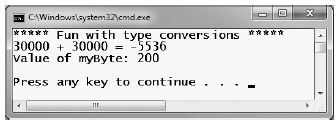
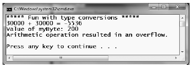
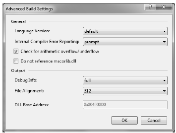

Now that you understand how to interact with intrinsic C# data types, let's examine the related topic of data type conversion. Assume you have a new Console Application project named TypeConversions that defines the following class:
class Program { static void Main(string[] args) { Console.WriteLine("***** Fun with type conversions *****"); // Add two shorts and print the result. short numb1 = 9, numb2 = 10; Console.WriteLine("{0} + {1} = {2}", numb1, numb2, Add(numb1, numb2)); Console.ReadLine(); } static int Add(int x, int y) { return x + y; } }
Notice that the Add() method expects to be sent two int parameters. However, the Main() method is, in fact, sending in two short variables. While this might seem like a complete and total mismatch of data types, the program compiles and executes without error, returning the expected result of 19.
The reason the compiler treats this code as syntactically sound is due to the fact that there is no possibility for loss of data. Given that the maximum value of a short (32,767) is well within the range of an int (2,147,483,647), the compiler implicitly widens each short to an int. Formally speaking, widening is the term used to define an implicit upward cast that does not result in a loss of data.
Note Look up Type Conversion Tables in the .NET Framework 4.0 SDK documentation if you wish to see permissible widening (and narrowing, see below) conversions for each C# data type.
Although this implicit widening worked in our favor for the previous example, other times this "feature" can be the source of compile-time errors. For example, assume that you have set values to numb1 and numb2 that (when added together) overflow the maximum value of a short. Also, assume you are storing the return value of the Add() method within a new local short variable, rather than directly printing the result to the console.
static void Main(string[] args) { Console.WriteLine("***** Fun with type conversions *****"); // Compiler error below! short numb1 = 30000, numb2 = 30000; short answer = Add(numb1, numb2); Console.WriteLine("{0} + {1} = {2}", numb1, numb2, answer); Console.ReadLine(); }
In this case, the compiler reports the following error:
Cannot implicitly convert type 'int' to 'short'. An explicit conversion exists (are you missing a cast?)
The problem is that although the Add() method is capable of returning an int with the value 60,000 (as this fits within the range of a System.Int32), the value cannot be stored in a short, as it overflows the bounds of this data type. Formally speaking, the CLR was unable to apply a narrowing operation. As you can guess, narrowing is the logical opposite of widening, in that a larger value is stored within a smaller data type variable.
It is important to point out that all narrowing conversions result in a compiler error, even when you can reason that the narrowing conversion should indeed succeed. For example, the following code also results in a compiler error:
// Another compiler error! static void NarrowingAttempt() { byte myByte = 0; int myInt = 200; myByte = myInt; Console.WriteLine("Value of myByte: {0}", myByte); }
Here, the value contained within the int variable (myInt) is safely within the range of a byte; therefore, you would expect the narrowing operation to not result in a runtime error. However, given that C# is a language built with type safety in mind, we do indeed receive a compiler error.
When you wish to inform the compiler that you are willing to deal with a possible loss of data due to a narrowing operation, you must apply an explicit cast using the C# casting operator (). Consider the following update to the Program type and resulting output in Figure 3-14.
class Program { static void Main(string[] args) { Console.WriteLine("***** Fun with type conversions *****"); short numb1 = 30000, numb2 = 30000; // Explicitly cast the int into a short (and allow loss of data). short answer = (short)Add(numb1, numb2); Console.WriteLine("{0} + {1} = {2}", numb1, numb2, answer); NarrowingAttempt(); Console.ReadLine(); } static int Add(int x, int y) { return x + y; } static void NarrowingAttempt() { byte myByte = 0; int myInt = 200; // Explicitly cast the int into a byte (no loss of data). myByte = (byte)myInt; Console.WriteLine("Value of myByte: {0}", myByte); } }
Figure 3-14 OOPS! We lost some data when adding our numbers!
As you have just witnessed, an explicit cast allows you to force the compiler to apply a narrowing conversion, even when doing so may result in a loss of data. In the case of the NarrowingAttempt() method, this was not a problem, as the value 200 can fit snuggly within the range of a byte. However, in the case of adding the two shorts within Main(), the end result is completely unacceptable (30,000 + 30,000 = -5536?). If you are building an application where loss of data is always unacceptable, C# provides the checked and unchecked keywords to ensure data loss does not escape undetected.
To illustrate the use of these keywords, assume you have a new method within Program that attempts to add two bytes, each of which has been assigned a value that is safely below the maximum (255). If you were to add the values of these types (casting the returned int to a byte), you would assume that the result would be the exact sum of each member.
static void ProcessBytes() { byte b1 = 100; byte b2 = 250; byte sum = (byte)Add(b1, b2); // sum should hold the value 350. However, we find the value 94! Console.WriteLine("sum = {0}", sum); }
If you were to view the output of this application, you might be surprised to find that sum contains the value 94 (rather than the expected 350). The reason is simple. Given that a System.Byte can hold a value only between 0 and 255 (inclusive, for a grand total of 256 slots), sum now contains the overflow value (350 - 256 = 94). By default, if you take no corrective course of action, overflow/under-flow conditions occur without error.
To handle overflow or underflow conditions in your application, you have two options. Your first choice is to leverage your wits and programming skills to handle all overflow/underflow conditions manually. Of course, the problem with this technique is the simple fact that you are human, and even your best attempts may result in errors that have escaped your eyes.
Thankfully, C# provides the checked keyword. When you wrap a statement (or a block of statements) within the scope of the checked keyword, the C# compiler emits additional CIL instructions that test for overflow conditions that may result when adding, multiplying, subtracting, or dividing two numerical data types.
If an overflow has occurred, you will receive a runtime exception: System.OverflowException. Chapter 7 will examine all the details of structured exception handling and the use of the try and catch keywords. Without getting too hung up on the specifics at this point, observe the following update:
static void ProcessBytes() { byte b1 = 100; byte b2 = 250; // This time, tell the compiler to add CIL code // to throw an exception if overflow/underflow // takes place. try { byte sum = checked((byte)Add(b1, b2)); Console.WriteLine("sum = {0}", sum); } catch (OverflowException ex) { Console.WriteLine(ex.Message); } }
Notice that the return value of Add() has been wrapped within the scope of the checked keyword. Since the sum is greater than a byte, we trigger a runtime exception. Notice the error message printed out via the Message property in Figure 3-15.
Figure 3-15 The checked keyword forces runtime exceptions to be thrown when data loss occurs
If you wish to force overflow checking to occur over a block of code statements, you can do so by defining a checked scope as follows:
try { checked { byte sum = (byte)Add(b1, b2); Console.WriteLine("sum = {0}", sum); } } catch (OverflowException ex) { Console.WriteLine(ex.Message); }
In either case, the code in question will be evaluated for possible overflow conditions automatically, which will trigger an overflow exception if encountered.
If you are creating an application that should never allow silent overflow to occur, you may find yourself in the annoying position of wrapping numerous lines of code within the scope of the checked keyword. As an alternative, the C# compiler supports the /checked flag. When enabled, all of your arithmetic will be evaluated for overflow without the need to make use of the C# checked keyword. If overflow has been discovered, you will still receive a runtime exception.
To enable this flag using Visual Studio 2010, open your project's property page and click the Advanced button on the Build tab. From the resulting dialog box, select the Check for arithmetic overflow/underflow check box (see Figure 3-16).
Figure 3-16 Enabling project-wide overflow/underflow data checking
Enabling this setting can be very helpful when you're creating a debug build. Once all of the overflow exceptions have been squashed out of the code base, you're free to disable the /checked flag for subsequent builds (which will increase the runtime performance of your application).
Now, assuming you have enabled this project-wide setting, what are you to do if you have a block of code where data loss is acceptable? Given that the /checked flag will evaluate all arithmetic logic, C# provides the unchecked keyword to disable the throwing of an overflow exception on a case-by-case basis. This keyword's use is identical to that of the checked keyword in that you can specify a single statement or a block of statements.
// Assuming /checked is enabled, // this block will not trigger // a runtime exception. unchecked { byte sum = (byte)(b1 + b2); Console.WriteLine("sum = {0} ", sum); }
So, to summarize the C# checked and unchecked keywords, remember that the default behavior of the .NET runtime is to ignore arithmetic overflow/underflow. When you want to selectively handle discrete statements, make use of the checked keyword. If you wish to trap overflow errors throughout your application, enable the /checked flag. Finally, the unchecked keyword may be used if you have a block of code where overflow is acceptable (and thus should not trigger a runtime exception).
To wrap up the topic of data type conversions, I'd like to point out the fact that the System namespace defines a class named Convert that can also be used to widen or narrow data.
static void NarrowWithConvert() { byte myByte = 0; int myInt = 200; myByte = Convert.ToByte(myInt); Console.WriteLine("Value of myByte: {0}", myByte); }
One benefit of using System.Convert is that it provides a language-neutral manner to convert between data types (for example, the Visual Basic language syntax for casting is completely different from the C# language syntax). However, given that C# provides an explicit conversion operator, using the Convert type to do your data type conversions is usually nothing more than a matter of personal preference.
Source Code The TypeConversions project is located under the Chapter 3 subdirectory.